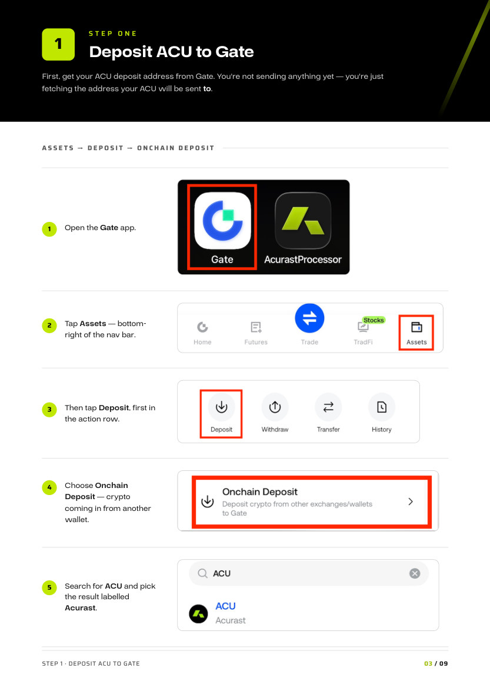

Acurast Hub account with ACU
Where your rewards land. Sign in at hub.acurast.com and check your ACU balance.
COMMUNITY WITHDRAWAL GUIDE
Turn your Acurast rewards into pesos — step by step.
Received some ACU for providing compute on Acurast and want it in your GCash, Maya or bank account? Follow the four-step route below.
BEFORE YOU START
Where your rewards land. Sign in at hub.acurast.com and check your ACU balance.
The exchange you'll route through. It needs to be verified and ready to receive a deposit.
GCash, Maya, or a bank account — wherever you want the pesos to arrive.
In P2P trading, never confirm or release the transaction until you have opened GCash, Maya or your bank app and seen the money arrive. A buyer's screenshot is not proof.
THE ROUTE, END TO END
STEP ONE
First, get your ACU deposit address from Gate. You're not sending anything yet — you're just fetching the address your ACU will be sent to.

STEP TWO
Now send the ACU from the Hub to the Gate address you just copied.

STEP THREE
ACU doesn't sell straight into pesos, so first swap it for USDT — the stablecoin that PHP buyers trade against.

STEP FOUR
The last hop: Gate → P2P → Sell USDT → PHP, then choose your preferred payment method.


REMEMBER FOR NEXT TIME
Wrong network can permanently lose ACU.
Leave some ACU in the Hub for transaction fees.
Don't trade until ACU has landed in Gate.
See the pesos in your own app first, then release.
THAT'S IT
ACU in the Hub, pesos in your pocket.